Pero Sara Noriega no se lo permitió hasta que no acabó de desahogarse contra Fermina Daza.
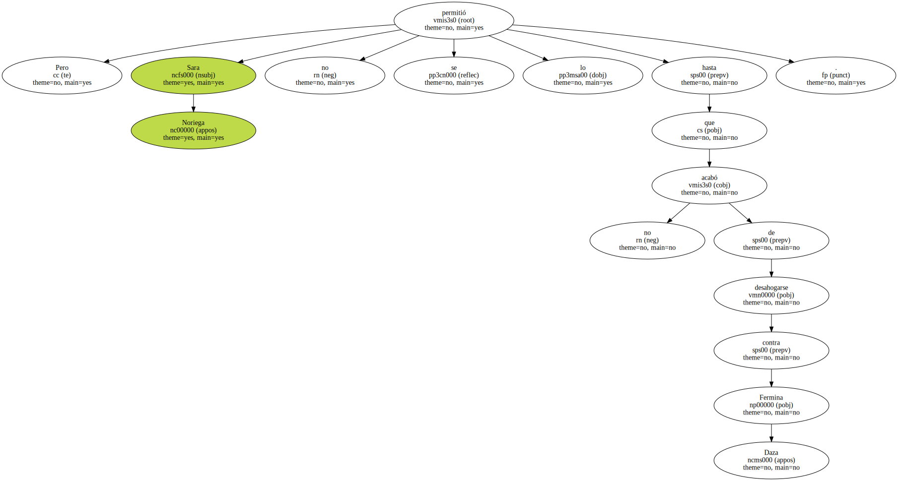Por un golpe de intuición que no hubiera podido explicar , estaba convencida de que había sido ella la autora de la conspiración para escamotearle el premio.
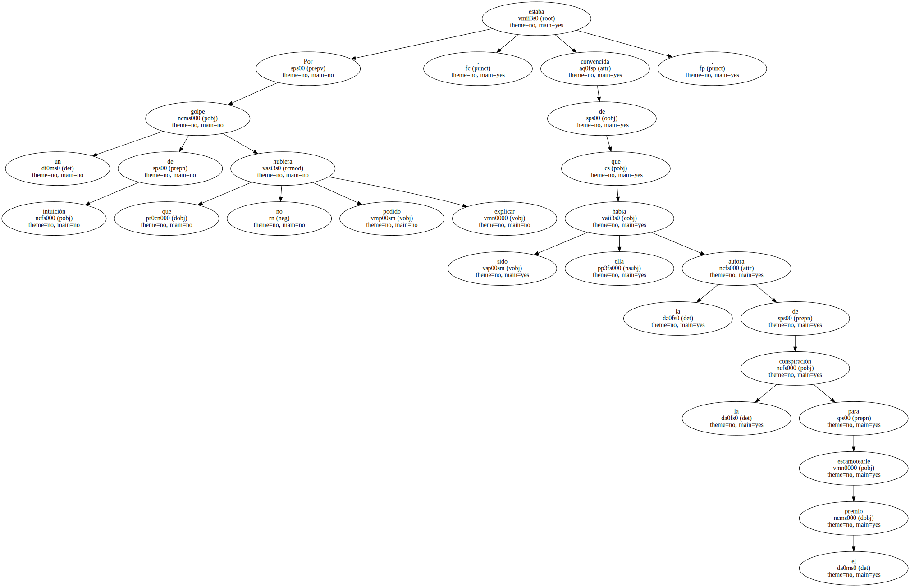No había ninguna razón para creerlo : no se conocían , no se habían visto nunca , y Fermina Daza no tenía nada que ver con las decisiones del concurso , si bien estaba al corriente de sus secretos.
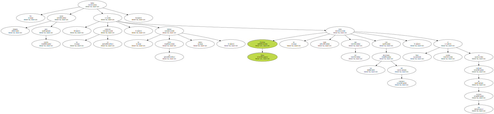Desde ese momento , Florentino Ariza la vio con otros ojos.
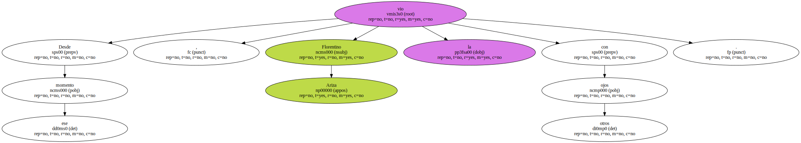También para ella pasaban los años.

Su naturaleza feraz se marchitaba sin gloria , su amor se demoraba en sollozos , y sus párpados empezaban a mostrar la sombra de las viejas amarguras.
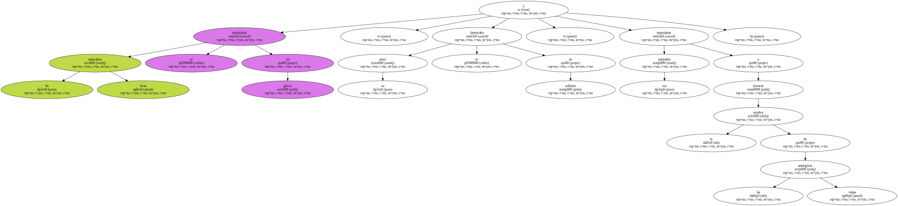Era una flor de ayer.
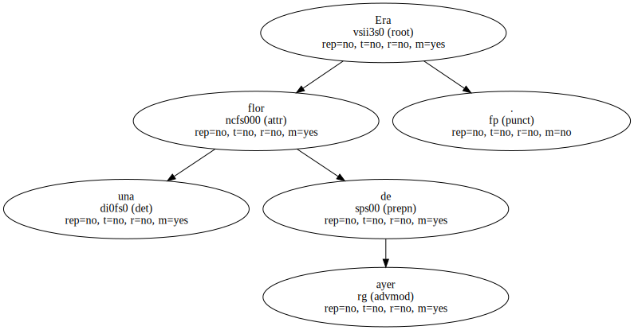Nuevo estado se las veía surgir de las cenizas con una vitalidad reverdecida.
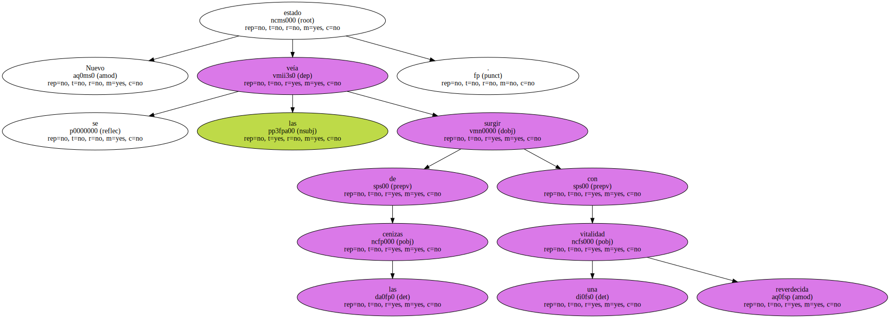Empezaban viviendo como parásitas de sombras en los caserones desiertos , se volvían confidentes de sus sirvientas , amantes de sus almohadas , sin nada que hacer después de tantos años de cautiverio estéril.
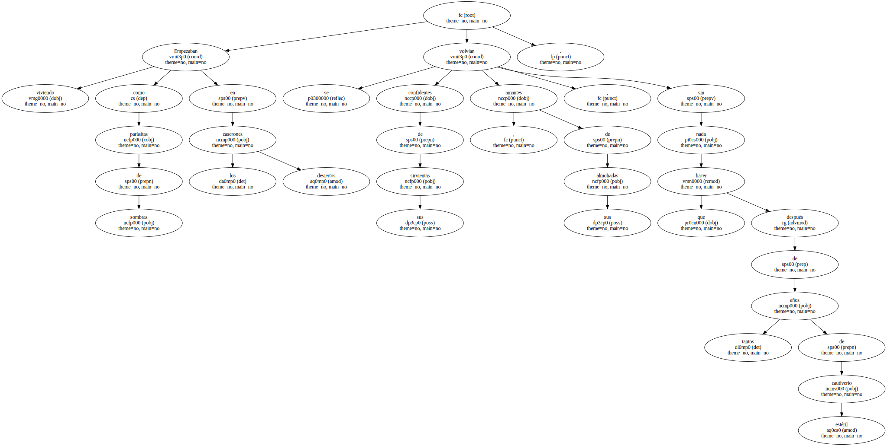Malgastaban las horas sobrantes cosiendo en la ropa del muerto los botones que nunca habían tenido tiempo de reponer , planchaban y volvían a planchar sus camisas de puños y cuellos de parafina para que siempre estuvieran perfectas.
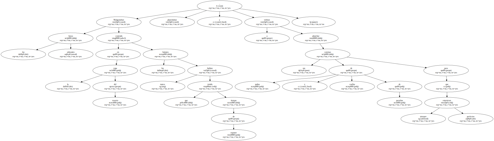Seguían poniendo su jabón en el baño , la funda con sus iniciales en la cama , el plato y los cubiertos en su lugar de la mesa , por si acaso volvían de la muerte sin avisar , como solían hacerlo en vida.
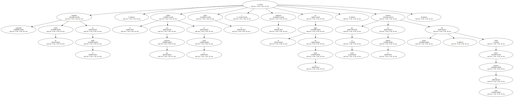Y sin embargo , cuando lo veían salir de la casa instigado por ellas mismas a tragarse el mundo , entonces eran ellas las que se quedaban con el terror de que el hombre no volviera nunca.
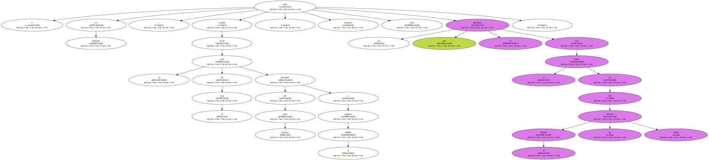